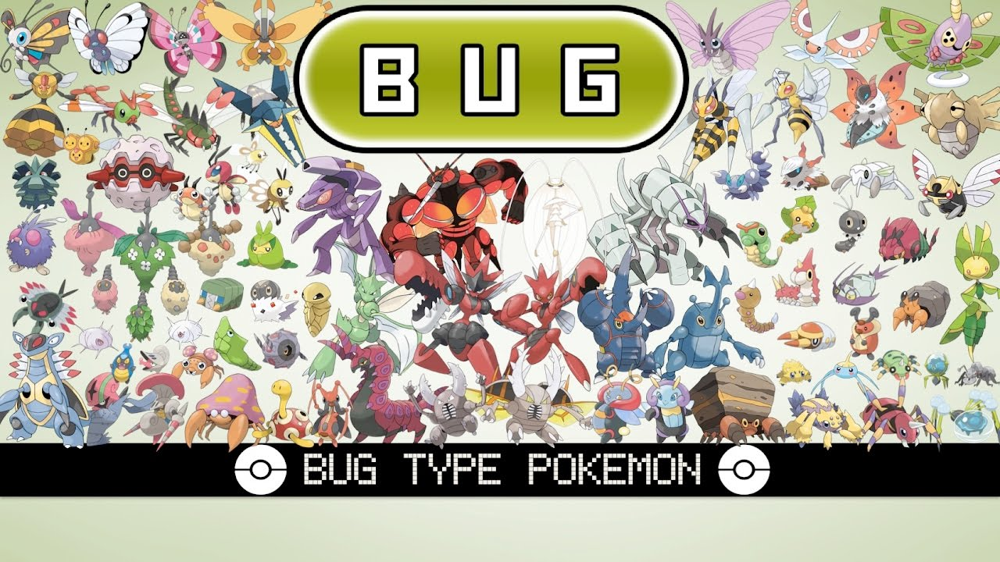
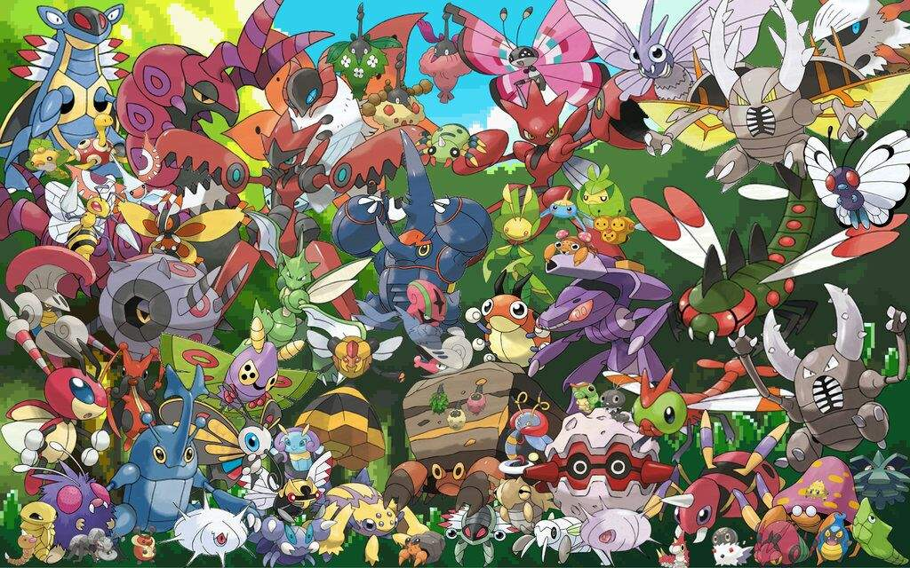

BUG-TYPE POKEMON
Bug-type Pokémon represent a fascinating and often underrated aspect of the Pokémon universe, embodying a diverse array of species with unique characteristics and abilities. From the humble Caterpie to the majestic Volcarona, these creatures captivate trainers with their resilience, adaptability, and, in some cases, surprising power. One of the defining traits of Bug-type Pokémon is their ubiquity in the natural world within the Pokémon universe. Much like their real-world counterparts, Bug-types can be found in a wide range of habitats, from lush forests to arid deserts, bustling cities to remote mountain ranges. This diversity reflects their adaptability to various environmental conditions, making them a fascinating subject of study for researchers and trainers alike. In battles, Bug-type Pokémon often excel in speed and agility, compensating for their relatively lower base stats in other areas. Moves like U-turn and Bug Buzz are staples of Bug-type strategies, allowing these Pokémon to chip away at opponents' defenses while maintaining momentum on the battlefield. Additionally, Bug-types frequently boast secondary typings, such as Flying, Poison, or Psychic, further expanding their strategic versatility and opening up a wealth of synergistic possibilities in team composition. Beyond their combat prowess, Bug-type Pokémon play a crucial role in the ecological balance of the Pokémon world. Many species serve as pollinators, aiding in the reproduction of plants and fostering biodiversity in their respective habitats. Others are integral components of food chains, serving as prey for larger Pokémon or predators themselves, thus contributing to the intricate web of life that sustains the Pokémon ecosystem. In terms of design, Bug-type Pokémon encompass a wide range of forms and inspirations, drawing from diverse insect species as well as other arthropods and invertebrates. This diversity not only showcases the creativity of Pokémon designers but also fosters a sense of wonder and appreciation for the natural world among players. Whether adorned with vibrant colors and intricate patterns or boasting sleek, streamlined silhouettes, Bug-type Pokémon never fail to capture the imagination. In conclusion, Bug-type Pokémon stand as a testament to the rich tapestry of life within the Pokémon universe. From their adaptability and strategic prowess to their ecological significance and captivating designs, these creatures continue to enchant and inspire trainers of all ages. As players embark on their journeys, Bug-type Pokémon serve as steadfast companions, reminding us of the beauty and complexity inherent in the natural world.
 